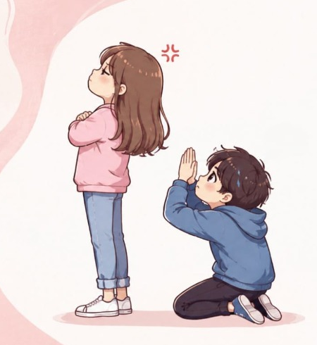
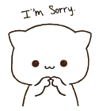
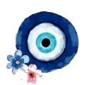
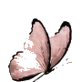
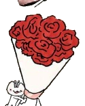
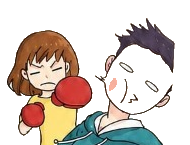
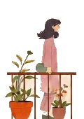
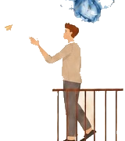

Hey Indumathi....
you made it here. 🥺

you made it here. 🥺


I wanted to tell you...
Hey,
I just wanted to say I'm really sorry.

I know I shouldn't have shouted at you just because you were talking to other guys.
You didn't do anything wrong, and I realize that I let my feelings take over.
I never wanted to hurt you or make you feel bad.



I honestly miss talking to you.
I miss the way we used to chat, the random conversations, the small things, everything.
Whenever I see you, I still want to talk to you, but I know things aren't the same right now.
I understand why you're upset with me, and I respect your space.
Honestly, I'm scared to talk to you when I see you outside.
I've tried a few times, but then I start thinking about how you might respond, and my guilt takes over, so I just walk away.
I wish I had the courage to say all of this to you face to face.
I want you to know that I'm truly sorry for what I did. I wish I had handled things differently.
I've learned from my mistake, and I promise I'll try to do better.
If you're still angry or upset with me, please let me know.
You can shout at me, be mad at me, or just talk to me about it.
I would rather hear how you feel and sort things out than have this silence between us.
Not being able to talk to you has been really hard for me.


I'm not asking for your forgiveness right away.
I just hope that someday, when you're ready, we can talk again.
If you ever feel comfortable talking to me again and decide to forgive me, please call me.
I'd really like to hear your voice and talk to you again.
Until then, I'll respect your decision.